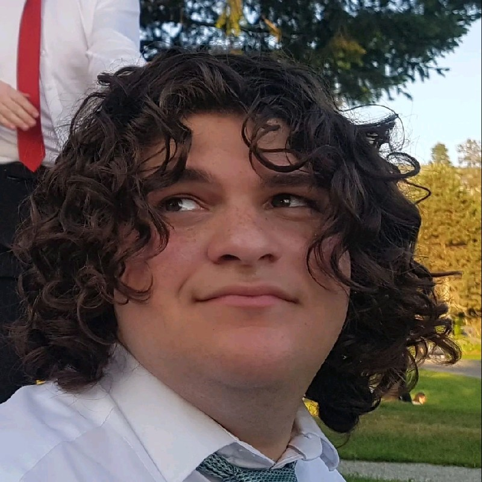
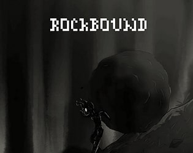
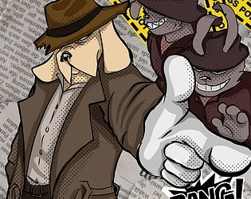
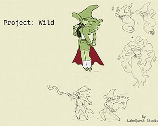

Hi, I’m Heriam Oliveira
I’m a game designer passionate about helping teams succeed. I design mechanics that feel fun and fair, while keeping people aligned and motivated so projects ship on time. I bring clarity, energy, and collaboration to every project I work on.
Core Skills: Communication, Team Management, Problem-Solving, Passion for the Gaming Industry
My Projects

Rockbound
Executive Summary: Built during a jam under strict time limits, Rockbound demonstrates my ability to design balanced mechanics under pressure. I focused on creating systems that encourage exploration and player mastery despite rapid prototyping constraints.
Metadata
- Event: Game Jam
- Tools: Unity, C#, Aseprite
- Role: Game Designer
- Timeline: 48 hours
Constraints
Rockbound was created during a highly restrictive jam environment. The team had limited time and resources, so we had to prioritize mechanics that would deliver maximum impact with minimal scope creep.
My Role & Responsibilities
- Designed and balanced core mechanics under tight deadlines.
- Created level flow and narrative context to support player immersion.
- Collaborated with artists and programmers to ensure scope feasibility.
Process & Key Decisions
I quickly prototyped a loop that emphasized player skill over grind. Playtest feedback was incorporated within hours, not days, to refine mechanics. The focus was on clarity, simplicity, and fun.
Outcomes & Results
The game was successfully submitted on time, earning positive feedback for its mechanical polish and balance. The project reinforced my ability to work effectively under jam conditions.
Reflection & Growth
I learned how to cut scope aggressively without sacrificing player experience, a skill I continue to apply in larger projects.
Play on Itch.io

Animal Whacker
Executive Summary: An action platformer inspired by Katana Zero and My Friend Pedro, designed for flow and high-impact combat. I created levels and enemy patterns that reward precision and creativity, delivering a satisfying fast-paced experience.
Metadata
- Event: Pirate Software Jam 2024
- Tools: Figma, Trello, Miro
- Role: Game Designer
- Timeline: 2 weeks
Constraints
The jam theme required interpreting “Sacrifice is Strength.” I explored this through risk-reward gameplay where player choices amplify their combat potential.
My Role & Responsibilities
- Designed enemy AI patterns and level pacing.
- Integrated alchemy-inspired mechanics.
- Collaborated on design documentation and feedback loops with the team.
Process & Key Decisions
Drawing from Katana Zero, I emphasized flow — making death fast, retries instant, and movement satisfying. This meant tuning hitboxes, enemy placements, and aim assist to maximize player empowerment.
Outcomes & Results
The project delivered a playable, fast-paced prototype that successfully captured the intended feeling of being an unstoppable force.
Reflection & Growth
I developed sharper instincts for pacing and difficulty curves, especially in high-speed action environments.
Play on Itch.io

Project: Wild
Executive Summary: A survival-themed prototype where I emphasized systemic interactions and player agency. My focus was on resource management and crafting loops that keep players engaged while shaping emergent narratives.
Metadata
- Project Type: Prototype
- Tools: Godot, GDScript, Trello
- Role: Systems Designer
- Timeline: 1 week
Constraints
The project was built with a small team, balancing scope with ambition. The focus was on creating compelling mechanics first, before expanding into worldbuilding.
My Role & Responsibilities
- Designed resource management and crafting systems.
- Documented mechanics clearly for team alignment.
- Prototyped and iterated on survival loops.
Process & Key Decisions
We prioritized emergent interactions (e.g., crafting + environment hazards) to allow players to discover strategies organically. I worked closely with teammates to balance realism with fun.
Outcomes & Results
The prototype successfully demonstrated the viability of survival loops that encourage exploration and replayability. The system design is strong enough to expand into a full project.
Reflection & Growth
I gained experience in systems thinking, balancing player freedom with structured mechanics.
Play on Itch.io